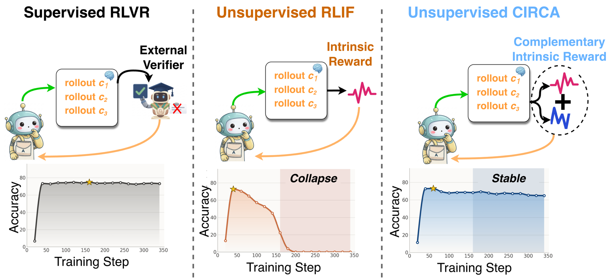
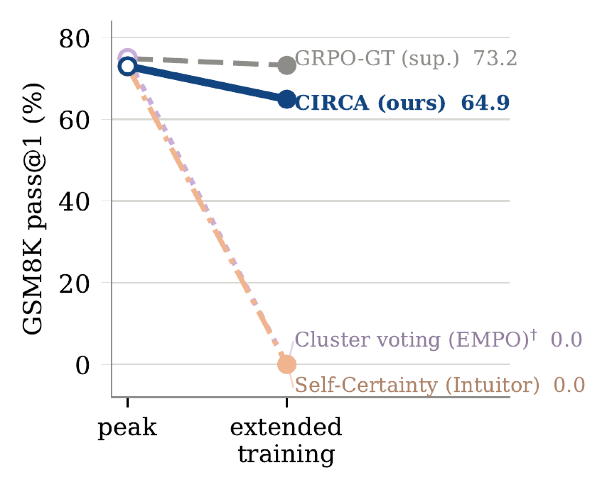
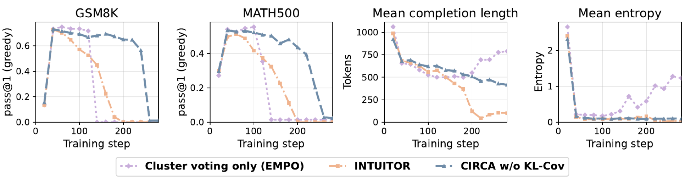
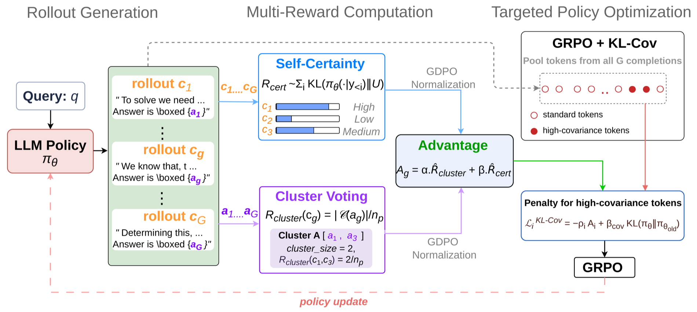
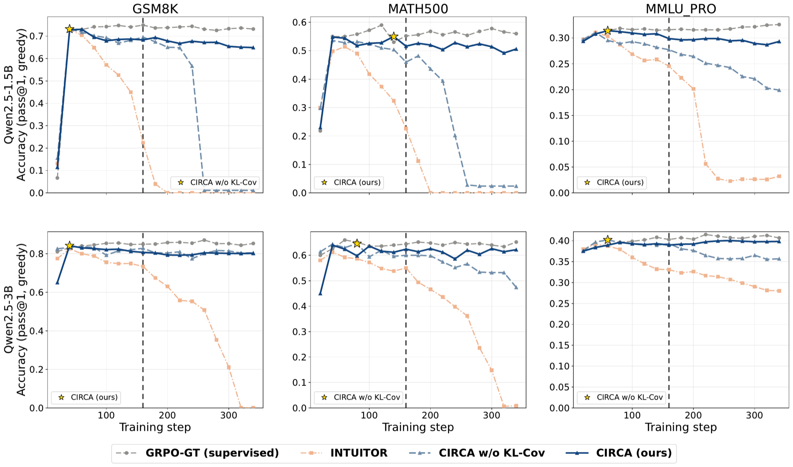

CIRCA
1BUET 2West Virginia University 3University of Aberdeen 4Fogsphere (Redev.AI) 5UCL
NeurIPS 2026
TL;DR Intrinsic rewards get hacked, and the two dominant ones fail in opposite directions. CIRCA optimizes both at once — each closes the loophole the other leaves open — normalizes them per channel, and penalizes only the ~2% of tokens that drive entropy collapse. It tracks supervised RLVR across four backbones while every single-signal baseline falls to near zero.

Supervised RLVR needs an external verifier. Single-signal RLIF removes it and collapses. CIRCA combines two complementary intrinsic rewards and stays stable — with no verifier at any point.
Every unsupervised method reaches a strong peak. The question is what happens when you keep training. CIRCA keeps 88.9% of its peak at step 340; both single-signal rewards reach exactly zero.

Remove the verifier and nothing anchors the policy. It over-optimizes whatever proxy it was given — and the two dominant proxies break in exactly opposite ways.
Answer-space collapse
Sees only the extracted answer, never the reasoning path. The policy drifts freely in reasoning space while funnelling every final answer into one dominant cluster. Entropy and length rise as accuracy crashes.
Token-space collapse
Sees only token confidence, never correctness. The policy becomes confidently deterministic — entropy falls to 0.03–0.17 nats and completions shrink to ~100-token templates.

Each reward is blind exactly where the other looks — which is why combining them blocks both exploits. Still not enough alone: CIRCA without KL-Cov degenerates by step 260.
Two complementary intrinsic rewards, each z-scored within the prompt group, combined into one advantage — plus a KL penalty aimed only at the tokens that cause collapse.

Why per-channel normalization
Combined naively, the self-certainty channel dominates the gradient by roughly an order of magnitude, quietly collapsing the objective back to a single signal.
Why targeted, not global
Penalizes only the top ~2% of tokens by log-prob–advantage covariance. A global entropy bonus pressures every token; this one is stable across a 200× range of βcov.
Evaluated every 20 steps on in-distribution GSM8K and MATH500 and out-of-distribution MMLU-Pro.

INTUITOR reaches near-zero math accuracy at both scales. CIRCA without KL-Cov delays collapse by ~60 steps but does not prevent it. Only the full method stays with supervised GRPO-GT across the whole horizon.
Qwen3-1.7B-Base — a newer pretraining generation, same recipe. INTUITOR peaks at step 40 and decays; on MATH500 it finishes below the base model it started from.
Collapse is not a small-model artifact. At 7B, INTUITOR scores exactly zero on every math task — including pass@K coverage with 32 samples. CIRCA's retention moves the other way.
Retention = end ÷ peak pass@1, shown GSM8K / MATH500. Bars show the mean.
Greedy · avg-pass@1 · pass@K at T=1. A policy that merely picked one wrong answer would still show coverage at pass@32. INTUITOR shows none.
| Benchmark | GRPO-GT (sup.) | INTUITOR | CIRCA (ours) |
|---|
Each cell is GSM8K / MATH500. Collapse step = first checkpoint below half of peak.
| Method | Peak | Peak step | Collapse | Step 340 | Retention |
|---|
After extended training. LiveCodeBench v6 and CRUXEval-O are code-execution tasks no method saw during training. Bold = best unsupervised.
Training used no labels, verifiers or reward models; ground truth scored frozen checkpoints only.
It consumes only (log-prob, advantage) pairs, so it drops into any clipped-surrogate method. Plain GRPO-GT plateaus at step 40; the augmented arm wins every checkpoint from 120 on.
The ~+2 pp gain is the informative part: with a gold reward anchoring training there is little instability left to remove. Without that anchor, the same regularizer separates stability from total collapse.
The real saved completion from the collapsed checkpoint at step 240 — a template that is confident, well-formatted, and never emits an answer.
GSM8K problem 644 · gold answer 29 Steve is 60 years old. His wife is 4 years older than him. Their son is currently half as old as his mom, and their son's wife is 3 years younger than her husband. How old is Steve's son's wife?
To determine the age of Steve's son's wife, we need to follow these steps: identify Steve's age, calculate his wife's age, determine their son's age, then calculate the son's wife's age.
Step 1. Steve is currently 60 years old.
Step 2. His wife is 4 years older: 60 + 4 = 64.
Step 3. Their son is half as old as his mom: 64 ÷ 2 = 32.
Step 4. The son's wife is 3 years younger: 32 − 3 = 29.
At this checkpoint there are 747 problems — 56.6% of the test set — where INTUITOR is wrong and CIRCA is correct. Mean completion length 282 characters versus 1,260.
@inproceedings{joarder2026two,
title = {Two is better than one: A Collapse-Resistant
Multi-Reward {RLIF} Training Framework},
author = {Joarder, Shourov and Sikdar, Diganta and
Akash, Ahsan Habib and Bhattarai, Binod and
Gyawali, Prashnna},
booktitle = {Advances in Neural Information Processing Systems},
year = {2026},
eprint = {2605.22620},
archivePrefix = {arXiv}
}